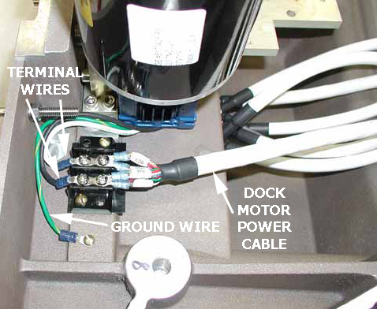
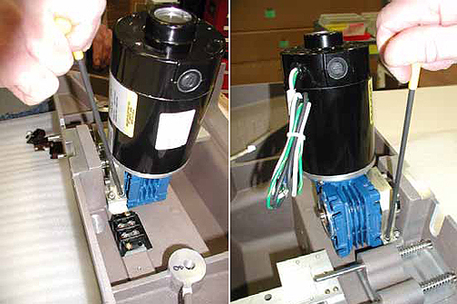
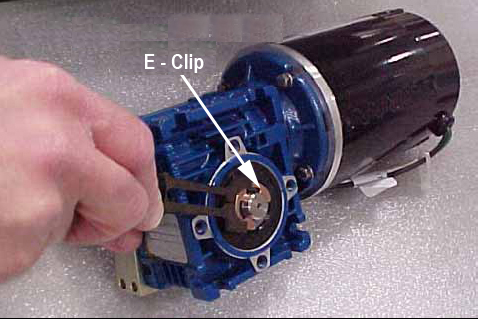
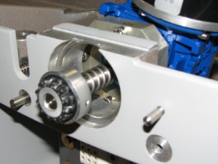
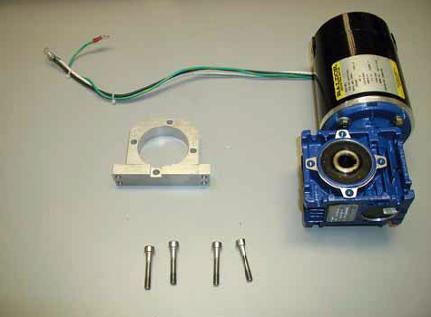

Operating Documentation
Direction 5670006, Rev# 1
Discovery MR750w GEM Service Methods
Module Version 12.0, Version Date 7/21/11
Operating Documentation |
| Required Persons | Preliminary Reqs | Procedure | Finalization |
|---|---|---|---|
| 2 | Not Applicable | 60 mins for 750/450/450w; 130 mins for 450w GEM | Not Applicable |
| Item | Qty | Effectivity | Part# | Manufacturer | |
|---|---|---|---|---|---|
| Non-Magnet Tool Kit | 1 | - | 5112581 or 5113258 | - | |
| Item | Qty | Effectivity | Part# | Manufacturer |
|---|---|---|---|---|
| Loctite 242 Threadlocker | (1) 0.5CC Tube | - | - | - |
| Fish Paper | As Needed | - | - | - |
| Item | Qty | Effectivity | Part# | Manufacturer | |
|---|---|---|---|---|---|
| Dock Motor | 1 | - | See FRU Manual | - | |
| SPDT Snap Action Switch | 4 | - | See FRU Manual | - | |
| ||||
| ELECTROCUTION HAZARD | ||||
| HIGH VOLTAGE PRESENT. | ||||
| USE PROPER LOCK OUT / TAG OUT PROCEDURES BEFORE servicing and/or maintaining. |
| ||||
| POSSIBLE PERSONAL INJURY | ||||
| THIS PROCEDURE REQUIRES movement OF FERROUS MATERIAL IN CLOSE PROXIMITY TO THE MAGNET. | ||||
| Therefore, two Field engineers are required at all times. |
| ||||
| Personal injury and equipment damage | ||||
| Strong Magnetic Field | ||||
| When servicing any magnetic equipment, it is critically
important that the service engineer consciously plan the path to be
taken when moving highly ferrous devices in the magnet environment.
The path should be as far from the magnet as practical and avoid high
flux-density fields. Safety Requirements
When planning a service path, it is critical that the path be clear and sufficiently wide. Ensure that there are no trip hazards, obstacles, clutter, slippery surfaces or other items even partially restricting the path. If there are portable obstacles in a path, remove them from the area and replace them after the service action is completed. It is required to walk the path prior to beginning service to ensure that there is sufficient space through which to pass for yourself and the object being serviced. |
Remove the Dock from the Magnet Room, see Dock Removal and Reinstallation.
Remove four bolts (2 on each side) to unfasten the dock cover from the dock base.
Illustration 1: Dock Cover and Dock Base

While removing the dock cover, disconnect the switch connector.
Illustration 2: Switch Connector

Carefully remove the dock cover from the dock base and then turn the dock cover upside down.
| NOTE: | Use care to ensure the top of the cover is not scratched. Lay down a cloth before setting the cover on the floor. |
Disconnect the dock motor power cable, terminal wires, and ground wire.
Illustration 3: Power Cable, Terminal, and Ground Wires

Remove 4 screws (2 each side) from the dock motor mount plate.
Illustration 4: Dock Motor Mount Plate Screws

Remove dock motor.
| ||||
| DO NOT DISCARD OLD DOCK MOTOR. YOU ARE GOING TO REUSE THE DOCK GEARBOX SHAFT FROM THE OLD DOCK MOTOR. | ||||
Go to Replacement Dock Motor Installation for instructions on how to reuse the coupling and install the new dock motor.
Remove the e-clip from the end of the dock gearbox shaft on the old dock motor using the blade of a slotted screwdriver. Secure the e-clip during removal to prevent the clip from flying away when pressured.
Illustration 5: Old Dock Motor, Gearbox Shaft, and E-Clip

Slide the dock gearbox shaft and key out of the dock motor and set it aside. Remove four screws and mounting plate.
Illustration 6: Dock Gearbox Shaft

Apply Loctite 242 Threadlocker on the hex screws of the new motor.
Illustration 7: Dock Motor, Mount Plate, and Screws

Position the Mount Plate on the dock motor and fasten with the four screws.
If replacing the shaft only, apply a small amount of anti-seize (from shaft assembly FRU kit) to the shaft key. If the complete Dock Motor Assembly is being replaced, this step is not required.
Assemble the drive coupling on new shaft, then slide the new gearbox shaft, with spring and key, into the motor and replace the e-clip. See Illustration 6.
Apply Loctite 242 Threadlocker on the four Mount Plate screws, position the dock motor onto the dock cover and then re-attach the dock motor. See Illustration 4.
Reconnect the terminal wires, ground wire, and power cable to original terminal strips. See Illustration 3.
Reconnect the switch connector.
Switch #1 is located in the bottom casting and switches #2, #3, and #4 are located in the dock cover
Illustration 8: Dock Switches

Remove the defective switch as required. Note the wire attachment locations on the switch terminals.
When replacing Switch #1 (inside the bottom casting), place a square of Fish Paper between the switch and the mounting wall. Add Loctite 242 to each screw before replacement of screws.
When replacing Switches #2, #3, or #4 (add Loctite 242 to each screw before replacement of screws):
Push the switch towards the respective shaft while tightening the screws.
After installation, verify all three switches activate and deactivate (an audible click should be heard) while cycling the shaft, in and out, at least three times (rotate the shaft approximately 120° for each cycle).
Reconnect the wires to the switch terminals.
Reattach the switch connector.
Place the dock cover onto the dock base and reattach dock cover bolts. See Illustration 1.
Reinstall the dock (see Dock Removal and Reinstallation).
Perform Dock Adjustments and Dock Hardware Adjustments as necessary.
Ensure the motor is functioning properly when docking the Patient Table and verify that lowering the Table results in automatic retraction of LPCA into the bridge.
Perform the Coil Datapath Diagnostic (CDD)